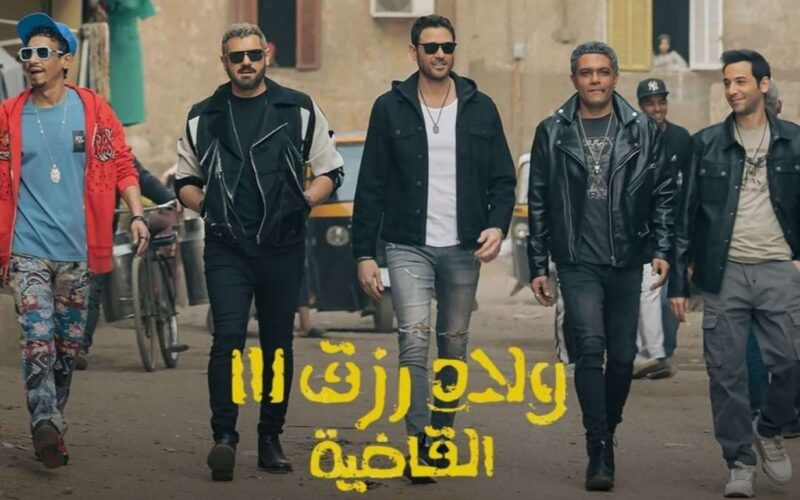

احمد عز يبدأ في تصوير فيلم فرقة الموت لعرضه بعد عيد الاضحي
احمد عز يشارك في بطولة فيلم فرقة الموت حيث تدور أحداثه حول الظابط ( عمر ) الذي يكلف بمهمة القبض علي خط الصعيد
يشاركه في البطولة اسر ياسين و منة شلبي و محمود حميدة و أمينة خليل و من إخراج أحمد علاء الديب و تأليف صلاح الجهيني
Mufasa The Lion King
طرحت شركة ديزنى أول بوستر ترويجى لفيلمها الجديد
Mufasa: The Lion King،
العمل الذى سيطرح يوم 20 ديسمير المقبل في دور العرض حول العالم، وستصل مدته
إلى أكثر من ساعتين.

Dune 2
يواصل فيلم
Dune: Part Two
بتحقيقه إيرادات عالية عالمياً، حيث وصلت
أرباحه إلى 705 مليونا و 250 ألف دولار في شباك التذاكر
العالمي، منذ طرحه يوم 1 من مارس الجاري
فيلم السرب
تجاوزت إيرادات فيلم السرب على مدار 3 أيام عرض بالسينما 6 ملايين جنيه،
وتصدر المركز الأول في قائمة الإيرادات اليومية بشباك تذاكر السينما

وش في وش
منصة نيتفلكس تعلن عن عرضها فيلم وشو في وش يوم ٧ مايو القادم
من بطولة امينة خليل و محمد ممدوح و محمد شاهين و اسماء جلال و سامي مغاوري
هذا و قد حقق الفيلم إيرادات وصلت ل ٤٢ مليون جنيه
ڤوي ڤوي ڤوي
منصة شاهد تعلن عن عرض فيلم ڤوي ڤوي ڤوي يوم ١٦ مايو القادم من بطولة محمد فراج و طه دسوقي و نيللي كريم
وقد حقق الفيلم إيرادات عالية وصلت ل ٥٠ مليون جنيه
اسد اسود
محمد رمضان يبدأ تصوير فيلمه اسد اسود في صحراء الفيوم و الفيلم يتناول فترة ثورة العبيد، ومحمد رمضان اسمه علي بن محمد الفارسي، ويقود الزنوج لثورة ضد الجيش العباسي.
والأحداث تدور في عام 1280 ميلادية، في حقبة المماليك، والعمل من بطولة محمد رمضان، ماجد الكدواني، خالد الصاوي، شريف سلامة، رزان جمال، علي قاسم، أحمد عبدالحميد، إسلام مبارك، ومحمود السراج، ومن تأليف وإخراج محمد دياب.

ولاد رزق
في هذا الجزء، وبعد مرور سنوات وانفصال الأخوة في طرقهم الحياتية المختلفة. لكن في يوم من الأيام، يعود شبح من الماضي ليلقي بظلاله على ولاد رزق، مما يجبرهم على العودة إلى حياة الجريمة والسرقة مرة أخرى حتى ينجوا بأنفسهم، في عملية مصيرية هي الأكبر والأخطر والأهم في تاريخ ولاد رزق.

البيت بيتي
مسلسل البيت بيتي يتصدر قائمة المشاهدات علي تطبيق شاهد وذلك بعد عرضه و بداية الجزء التاني بعد أن حقق الجزء الاول نجاح صاخب
و يشارك في بطولته كريم محمود عبدالعزيز و مصطفي خاطر و ميرنا جميل و العمل من اخراج خالد مرعي و من تأليف أحمد عبد الوهاب و كريم سامي
دواعي سفر
منصة واتش أت تستعد لعرض مسلسل دواعي سفر و تدور الأحداث حول إبراهيم الذي يعيش في عالم من نسج خياله وعندما يجد نفسه في موقف صعب يقرر تغيير حياته ويساعده في ذلك جاره الشاب علي وتتوالى الأحداث
العمل من بطولة امير عيد و نادين و كامل الباشا و احمد غزي و ايمن الشيوعي و احمد فاضل و من إخراج محمد ناير